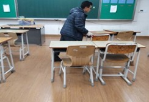
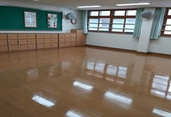
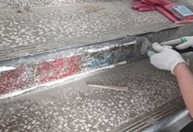
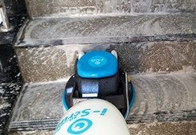
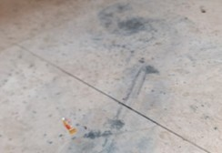
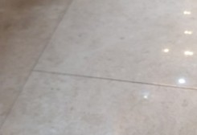
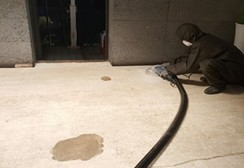
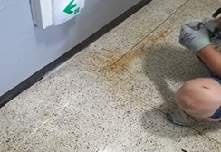
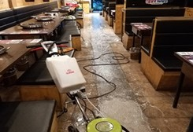

작업 분야
- 의자 바퀴자국, 스키드마크 제거
- 데코타일·카펫 철거 후 남은 본드 제거
- 실리콘, 스티커 자국 제거
- 페인트 자국 제거
- 식당 바닥·원목 기름때 제거
- 바닥 녹물, 백화 제거
작업 사진









바닥 오염·접착제 제거의 작업절차
- STEP 01고객상담진행
- STEP 02현장확인
- STEP 03오염 종류 확인
- STEP 04약품·장비 선정
- STEP 05오염·접착제 제거
- STEP 06바닥 세정
- STEP 07필요 시 연마·코팅
- STEP 08점검 및 마무리